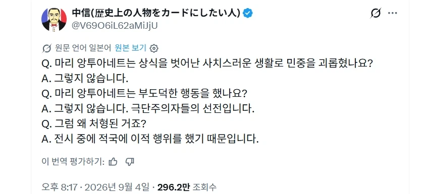

많은 오해가 조금씩 사라지고있긴하지만 앙투아네트가 프랑스 혁명 진압하려고 오스트라아 군대랑 내통했다는건 이견없는 사실이라고....

많은 오해가 조금씩 사라지고있긴하지만 앙투아네트가 프랑스 혁명 진압하려고 오스트라아 군대랑 내통했다는건 이견없는 사실이라고....
일단 죽이고 명분을 만들어보자
저건 오스트리아가 친가니까 지원요청한거지
민비년이랑은 다르다
그냥 혁명세력이 죽인거잖슴~~
비슷한 처지의 역대 왕비들은 자선사업은 열심히 했는데 마리 앙투아네트는 전혀 안한 것도 컸다 함
민비랑 똑같은년이라고 욕할뻔했는데 민비만 쓰레기년이었던 걸로
애초에 유럽쪽은 정치체제나 이념이 달라서 외가 아니더라도 한국이랑 일대일 치환은 안되긴해
오스트리아면 엄마네잖아
이적행위면 어쩔 수 없지
왼손잡이 네 이놈
바렌 사건 이전에는 굳이 왕 죽이려고 하진 않았음. 실드치는 사람도 있었고. 바렌사건 이후에 대가리 치자고 한거지. 악의적 선동도 대부분 바렌사건 이후 생김
1791년 오스트리아 프로이센 필니츠 선언 (대충 프랑스 왕실을 보호하겠다)
1792년 4월 혁명 프랑스 오스트리아에 선전포고
프로이센군 총사령관 브라운슈바이크 공작 1792년 브라운슈바이크 선언 (내용 대충 프랑스 왕실에 손대면 파리를 조저버린다)
왕실을 보호하려고 했던 선언이 아이러니하게 혁명군에겐 외국군대로 자국 시민을 제압하고자 내통 했다는 확신이 생김 이미 도주하다 붙잡힌 상태이기도 하다
또 1792년 9월 발미 전투에서 프로이센군의 진격을 혁명군이 막아냄
그리곤
1793년 1월 21일 루이 16세
1793년 10월 16일 마리 앙투아네트 처형
신성을 깨고 왕도 잘못 하면 법과 국민의 이름으로 목아지를 날릴 수 있다는 것을 보여줌
근데 원래 반란군은 왕, 왕비 죽이는게 일반적인거 아닌가
왕후장상의 씨를 남겨놓으면 언제 다시 복수할지 모르니깐
새삼스러운게 아닌거같은디
저것도 근대 국민국가로의 전환과 구체제 간 충돌의 예시라고 봐도 되지
앙투아네트 입장에선 본가에 헬프콜 친 거지만 돌아올 것은 프랑스를 짓밟을 외국 군대의 진주였으니ㅋㅋㅋ
마리가 평민에게 다과를 나눠주거나 심지어 직접 치료해줄 정도로 상냥하고 착했고 루이도 소탈해서 처음 오스트리아 갔을땐 국민들이 엉엉 울고 난리도 아니었다던데
프랑스에선 바렌의 배신이라고하지. 그 사건에 대해 프랑스인들의 배신감이 아주 컸나보더라
이야 이거 완전..
엄마아빠 살려줘 했다가 진짜 죽은거자너
민비를 우리도 저렇게 혁명해버렸어야했는데
애초에 중세에는 국가중심보다는 가문중심의 구도에 가까웠음. 국민이라던가 애국, 국가에 대한 반역 같은 개념은 근대 오면서 비교적 최근에 만들어진거임.
그게 그럼 어케 만들어졌나 하면 본글에 왕비 목 자르면서 만들어 나간 거임 ㅋㅋㅋㅋㅋㅋ 중세의 개념이면 친가에 지원요청한거라 평소대로 한건데 그게 하필 격변의 시기에 낚인거라
우리나라로 따지면 민비보단 백제가 멸망할때 일본에 sos친거랑가깝지